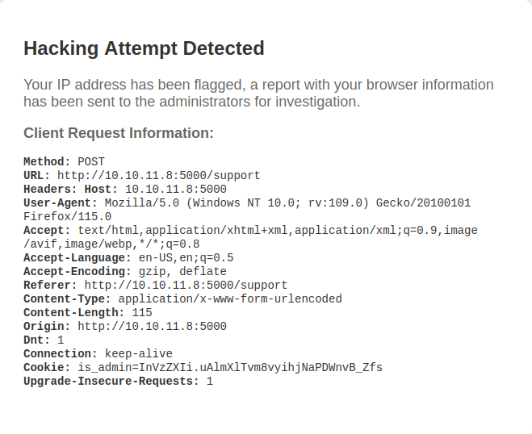
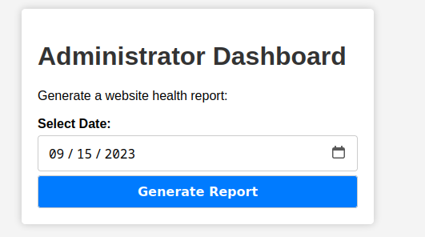
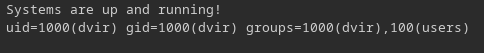

Linux · Laboratorio
Headless
Acceso al panel mediante XSS, inyección de comandos y abuso de un script.
XSS · Inyección · Sudo
El formulario de soporte
El escaneo inicial nos muestra SSH y un servicio HTTP en el puerto 5000. La página tiene una cuenta atrás y un formulario de soporte. Enumerando rutas encontramos también /dashboard, pero todavía no podemos acceder al panel. Pruebo una entrada con JavaScript en el formulario y aparece una página de aviso. Lo que me llama la atención es que muestra información de nuestra petición, incluido el User-Agent.

XSS en una cabecera
Interceptamos la petición en Burp Suite y colocamos el payload en User-Agent. La idea es que, cuando se revise el aviso, el navegador envíe la cookie a nuestro servidor HTTP. Recibimos la petición con la cookie. La ponemos en nuestra sesión y volvemos a /dashboard: esta vez podemos entrar.

Inyección al generar informes
El panel permite generar un informe a partir de una fecha. Mandamos esa petición a Burp y probamos si el valor acaba formando parte de un comando. Introduciendo id conseguimos ver su salida.

Tenemos ejecución de comandos. Después de probar varias formas de recibir una reverse shell, la que me funciona aquí es con Netcat.
Escalada de privilegios
Una vez dentro, tratamos la terminal y revisamos los permisos de sudo. Podemos ejecutar un script Bash como root. Al leerlo vemos que llama a otro script que podemos modificar. Lo preparamos para que nos mande una reverse shell y ejecutamos la tarea privilegiada. Recibimos la conexión como root.